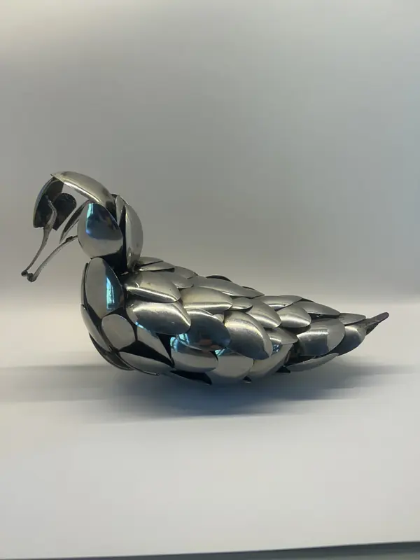
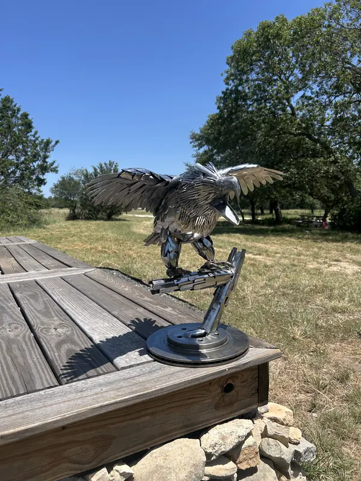

About
I began making metal sculptures in my senior year of high school. I had the opportunity to create a senior project with the intent being that I learn something that interested me. I decided to learn how to weld, and after getting the basics down, I made a heavy-duty bumper for my car, and as an Oregon Duck, I had to make one. I really enjoyed bringing my ideas to life, so I continued making new pieces.
My sculptures are made from anything I can get my hands on. I try to find and reuse materials because they are more interesting, and one of my goals is to keep that material in its original form with minimal change. I like to see what the final piece has been made from.
My favorite thing to do is create, and creating metal sculptures has become one of my favorite hobbies. I hope to continue making more complex sculptures as my skills improve, and I am excited to see how far I can go.
I've made team logos, animals, and vehicles, and it never gets old. Seeing my vision slowly come to life is very fulfilling.
I'm very grateful to everyone who has supported me in my journey. From the people who trusted me to make their favorite team's logo, to making a family of pigs that represent each family member. I am especially grateful to my parents, who encouraged me to keep going and supported me in every way.

